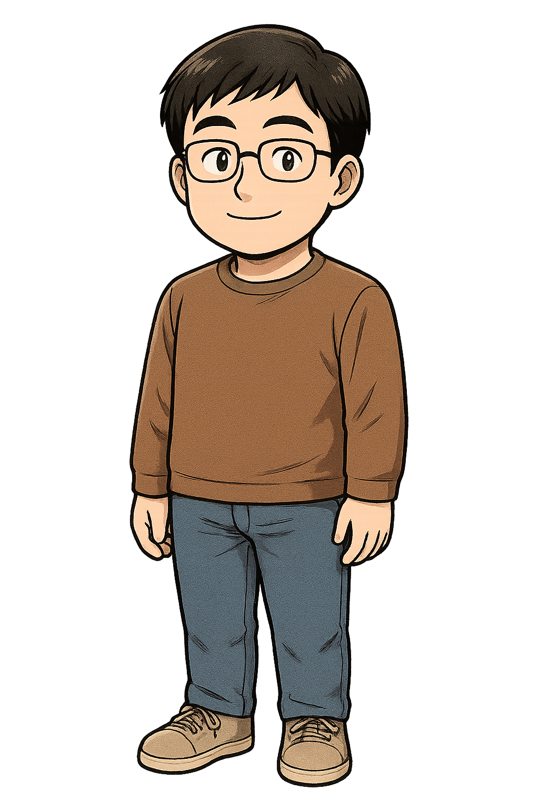

代表挨拶

平素は格別のお引き立てを賜り、厚く御礼申し上げます。
私はIT専門学校で培った確かな技術基盤と、応用情報技術者などの高度IT資格、そして150件を超える実務実績のもと、お客様のビジネスの課題解決に真摯に向き合ってまいりました。
システム開発から動画制作、そして業務自動化に至るまで、幅広い領域で「翌々日納品」を信条とする迅速かつ的確なサービスを提供しております。
事業概要・スキル領域
| 対応領域 | Webシステム開発 / 動画制作・編集 / 業務自動化（GAS・n8n） |
|---|---|
| 保有資格 | 応用情報技術者 / 情報処理安全確保支援士 |
| 主要実績 | 福島県省エネ家電購入支援事業（第2弾） 特設サイト構築・運用ディレクション 就労支援LP「極秘即日入寮計画」 制作（導線設計・UI実装） EC機材画像制作、広告運用等（計150件以上） |
| 開発技術 | HTML / CSS / JavaScript / Java / Python |
| 開発ツール | Adobe Premiere Pro / Vrew |